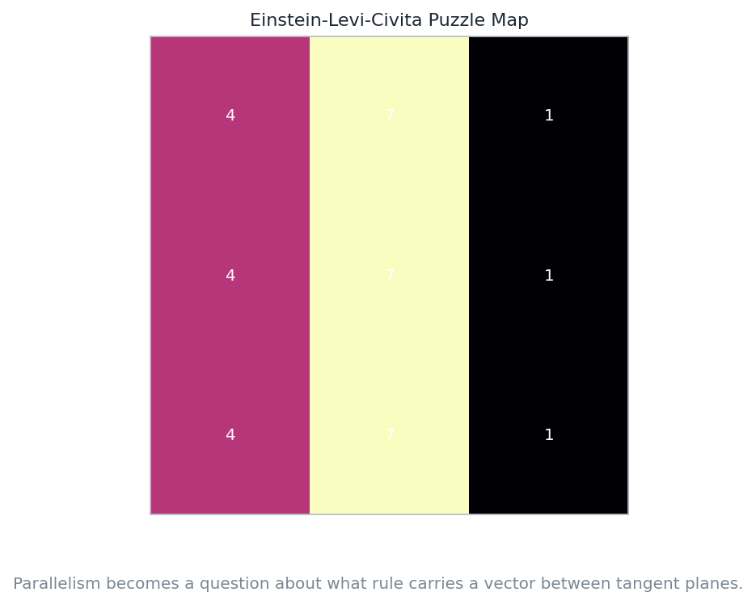
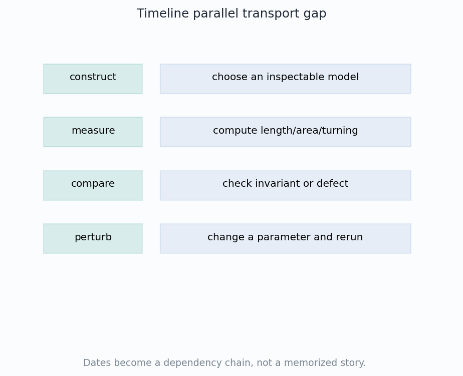

Why did a geometric account of relativity need parallel transport?
The puzzle
Einstein's 1915 theory already made gravity a statement about curvature. Levi-Civita's parallel transport appeared in 1917.
The missing verb
Curvature compares directions after motion. Before transport, the theory had tensors, but not a clean rule for carrying a direction between tangent spaces.
Lecture question
What must be added so curvature becomes an intrinsic comparison, not only a coordinate formula?

Notebook artifact: the historical gap points from tensor calculus to transport.
Visual Differential Geometry and FormsChapter 21
The Dates Do Not Line Up
A historical sequence becomes a mathematical dependency chain.
1915
Field Equation
Gravity is written as curvature tied to energy and momentum.
1917
Transport Rule
Levi-Civita gives a rule for moving tangent vectors along curves.
1919
Public Test
Observation makes the curvature theory famous beyond mathematics.
Not a contradiction
The physical equation can be written before the most transparent geometric interpretation is available.

Notebook artifact: dates as an inspectable chain, not memorized trivia.
Visual Differential Geometry and FormsChapter 21
What Tensor Calculus Could Already Say
Coordinate-respectful statement
G_{\mu\nu} = 8\pi T_{\mu\nu}
At one point
A tensor equation is meaningful because both sides transform the same way when coordinates change.
The available tool
Ricci calculus could track components, contractions, and invariance without pretending that coordinates are geometry itself.
A tensor statement is a coordinate-invariant local ledger.
Visual Differential Geometry and FormsChapter 21
The Missing Operation
Vectors based at different points live in different tangent spaces.
The false shortcut
Subtracting arrows drawn at two different points treats \(T_pM\) and \(T_qM\) as if they were already the same vector space.
No canonical comparison
v_q - v_p \quad \text{is undefined until a transport rule identifies the spaces.}
What a chart does
Coordinates label both tangent planes. They do not choose the geometrically preferred way to carry one direction into the other.
The geometry asks for an identification \(T_pM \to T_qM\), not just coordinates.
Visual Differential Geometry and FormsChapter 21
Curvature Wants A Loop Test
Transport around a loop gives a visible comparison at one point.
Why loops solve comparison
After a full loop the vector comes back to the original tangent space, so comparison is meaningful again.